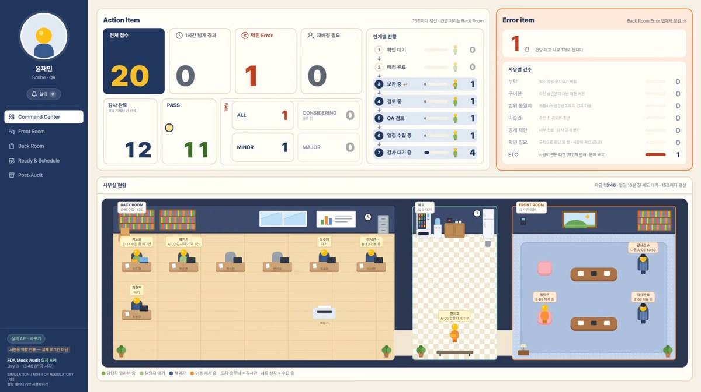
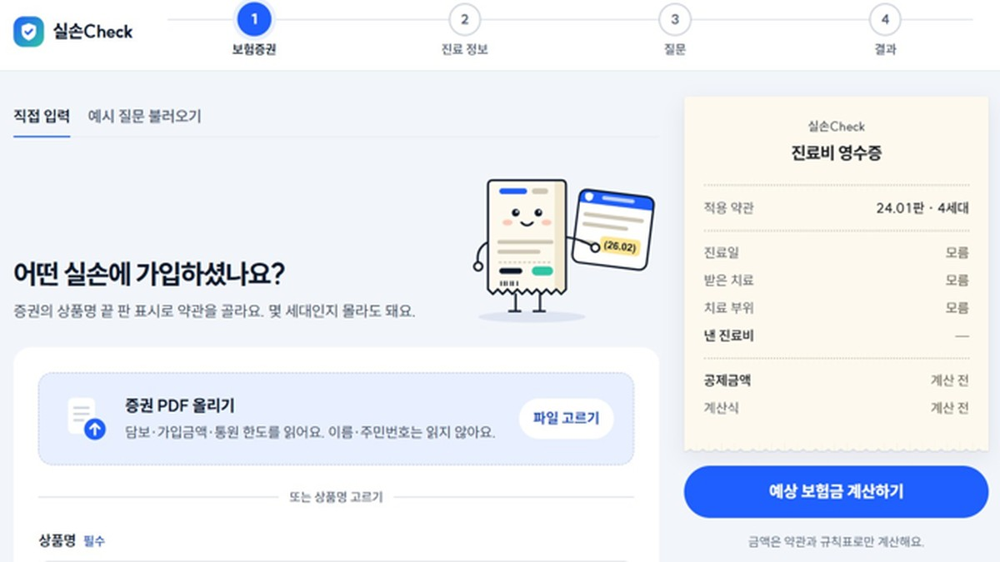
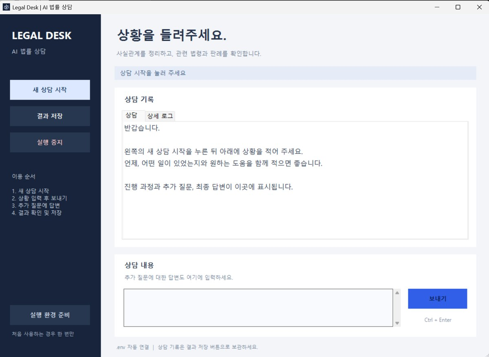

Hi, I'm 신예림
데이터가 멈추거나 틀릴 때,
원인을 재현하고 다시 생기지 않게 막습니다.
PostgreSQL DB 오너 · 데이터 검증·거버넌스 · RAG 데이터 파이프라인 · MySQL 운영 실습을 프로젝트로 해 온 데이터 엔지니어 지원자입니다.
TECH I WORK WITH
- PgPostgreSQL
- MyMySQL
- SQLSQL
- AlAlembic
- PyPython
- FaFastAPI
- ptpytest
engineer = { "name": "신예림", "focus": ["DB 설계", "데이터 검증", "RAG 데이터"], "edu": "LG CNS AI캠퍼스", }
17DB 오너로 관리한 Alembic 마이그레이션
86 → 0검증 규칙 오탐 (같은 조건 재측정)
12 / 12감사 종료 뒤 변경 API 차단
564약관 PDF를 정제한 검색 조각
소개
데이터 수집·전처리·저장·검증 과정에 관심을 갖고 데이터 파이프라인과 데이터 기반 서비스 프로젝트를 수행해 온 데이터 엔지니어 지원자입니다. 프로젝트를 통해 Python, SQL 기반 데이터 처리와 DB 설계, 데이터 품질 검증, 데이터 활용 서비스 구현 경험을 쌓았으며, 안정적이고 신뢰할 수 있는 데이터 시스템 구축을 목표로 합니다.
문제를 말로 추측하지 않고 먼저 다시 일으켜 봅니다. 승인 기록이 문서 단위로만 남던 문제(PR #177)와 MySQL 락 경합을 직접 재현한 뒤 고쳤습니다.
잘 잡는지와 잘못 잡는지를 함께 잽니다. 오류 2,659건을 심어 탐지율과 오탐률을 같이 쟀고, 실험 기준은 결과를 보기 전에 정했습니다.
왜 그렇게 했는지를 남깁니다. 담당 설계 문서 6종과 PR 본문에 이유와 확인 방법을 적어 다음 사람이 이어 갈 수 있게 했습니다.
기술 스택 — 어디에 썼는지
| Language | Python, SQLPython은 AI 코딩 도구와 함께 구현 · SQL은 스키마·제약·백필·업무 질의 |
|---|---|
| Database | PostgreSQL, MySQL, SQLAlchemy, Alembic, pgvectorAuditFlow DB 오너(마이그레이션 17개) · MySQL 운영 실습(백업·파티션·권한) |
| Data Engineering | ETL(PDF 추출·정제·적재), Data Pipeline, Data Modeling, Data Validation실손 Check 약관 564조각 · AuditFlow 검증 규칙과 오류 주입 평가 |
| Data / AI | RAG, Vector Search, LangChain, Pydantic, Neo4jRAG 근거 데이터 설계 · Legal Desk 단계별 구조화 출력 |
| DevOps / Tools | Git, GitHub, Docker Compose, FastAPI, pytest, AWS RDSPR 기반 협업 · 백엔드 테스트 1,032개 통과 후 병합 |
교육과 이력
교육 · 학력
- 2026.09 – 2027.02LG CNS AI캠퍼스Knowledge Graph 중심 AI 데이터 엔지니어 과정 · 976시간 · 수료 예정
- 5주 · 수료코멘토 데이터 엔지니어 직무 과정MySQL 운영 실습 (장애 재현 · 백업 · 파티션 · 튜닝 · 권한)
- 2024.02 졸업백석대학교 회계학과
자격
- 2026.05SQLD · ADsP
- 2025.04Google Analytics
- 2022.10공인중개사
경력
- 2025.11 – 2026.05쿠팡AI 검색 결과 관련성 평가 (5개 기준)
- 2025.03 – 2025.09현대카드 마케팅부서 · 계약직제휴 프로모션 운영 및 고객 반응 분석
- 2024.04 – 2024.10공인중개사 사무소부동산 투자 분석 및 컨설팅, 계약 법률 검토 및 계약 관리
프로젝트

AuditFlow AI
감사 요청 하나를 증빙 검색 → 검증 → QA 승인 → 외부 제출까지 한 경로로 추적하는 플랫폼
- 역할
- 데이터 신뢰·거버넌스 / DB 오너 · 병합 PR 61개
- 담당
- 스키마·마이그레이션 17개, 상태 머신, 감사 기록, 검증 규칙, Release Gate
- 결과
- 검증 규칙 오탐 86 → 0, 감사 종료 뒤 변경 API 12/12 차단

실손 Check
약관을 근거로 통원 치료의 예상 보험금과 주의점을 알려 주는 RAG 서비스
- 역할
- 데이터 담당 · PR 14개
- 결과
- 문서 14개 → 조각 564개, 정답 근거 검색 9 → 20/23

Legal Desk
공식 법령 근거를 확인했을 때만 답하는 대화형 법률정보 서비스
- 역할
- 기획 · 검증 (법률 도메인). 초반 프로젝트라 역할을 나누지 않고 함께 구현
- 결과
- 같은 10개 사례 회귀 테스트: 통과 1 → 3건, 개선 6 · 악화 2 · 동일 2
MySQL 운영 실습
운영 중 생기는 장애와 관리 업무를 직접 재현하고 해결
- 장애
- 3개 세션 락 경합 → data_locks로 원인 스레드 → KILL, 칼럼 삭제 후 적재 실패(Error 1054)
- 관리
- 월 파티션 재구성·만료 파티션 삭제, 인덱스 0.374 → 0.226ms(80행), 계정 4종 최소 권한
연락하기
- 이메일
- rimiya0627@gmail.com
- GitHub
- github.com/Shin-yerim ↗